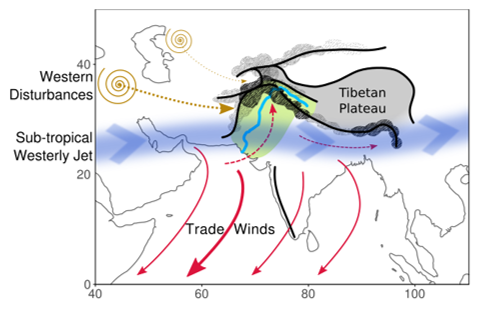
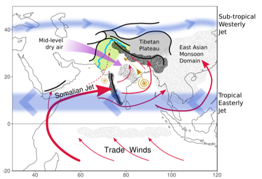
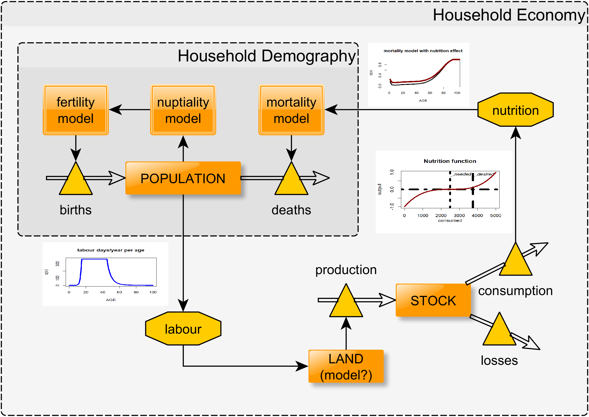
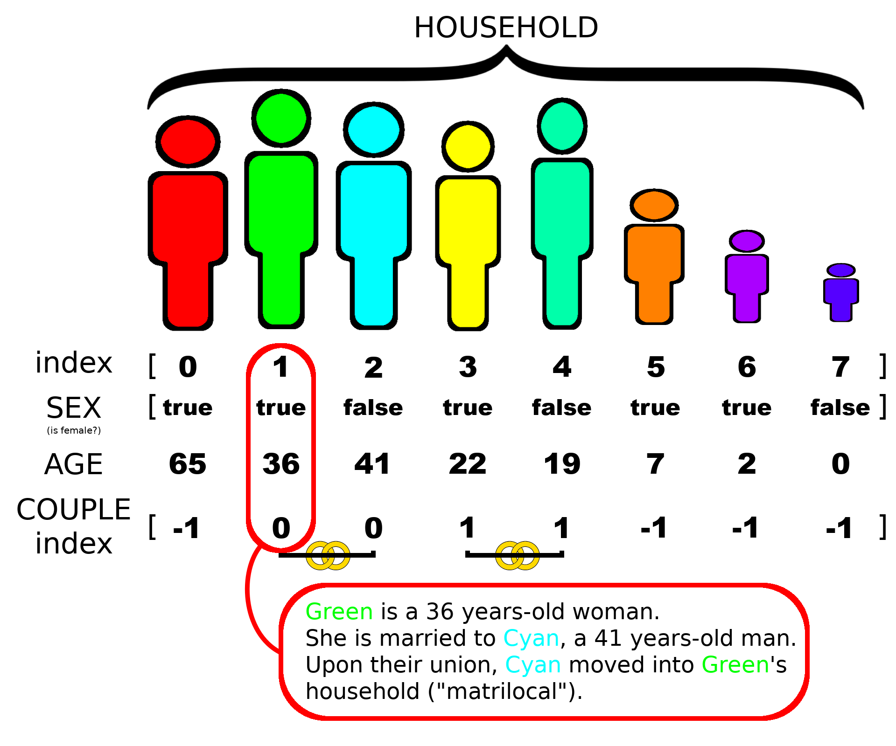

CAA, session 34
“Don't put all your eggs in one basket”
modelling cropping strategies and climate change in the Indus Civilisation
Andreas Angourakis,
Jennifer Bates,
Jean-Phillipe Baudouin,
Alena Giesche,
Joanna Walker,
M. Cemre Ustunkaya,
Nathan Wright,
Ravindra N. Singh and
Cameron A. Petrie
https://andros-spica.github.io/CAA-Angourakis-et-al-2019/index.html?print-pdf (printable version)
1. 'Thou shalt be ... diverse'
Image source (CC0 Public Domain), via Maxpixel.netSource: https://www.urbandictionary.com/
"Diversity favours adaptation"
- As finance motto: minimising risk
- Fisher's fundamental theorem of natural selection (as genetic variance)
- Applied at multiple levels:
- Ecosystem: populations are more diverse → ecosystem adapts easier/faster
- Population: individuals/groups are more diverse → population adapts easier/faster
- Group: individuals are more diverse → group adapts easier/faster
- Individual: practices are more diverse → the individual adapts easier/faster
- A principle, not necessarilly a fact
Fitness landscapes


- Used in eco-evo theory
- fitness x multiple dimensions
- Metaphoric/operational applications
- Caveats, e.g., Do populations move through low fitness "valleys"?
- "Seascapes": dynamic fitness landscapes
Scales of diversity
REFS
'hill climbing'
→ fitness maximiser
Regional/period:
'boat stabilising'
→ risk minimiser
Integration of multiple instances creates an average fitness landscape that buffers the diversity of conditions
2. Diversity in food production
See page for author [Public domain], via Wikimedia CommonsDiversity in food production


- factor of food security
- Increasing demand versus sustainability
- International trade versus food sovereignty
- Commercial crops, genetic engineering, landraces
- Climate change, plagues
Multi-cropping


- Two forms (Andrews and Kassam 1976, cited in Petrie & Bates 2017):
- Sequential cropping
- Intercropping
- 'Traditional' practices (e.g., permeaculture)
- Undermined by commercial crops but not lost
3. Case study: The Indus Civilisation
- One of the great ‘Old World’ Bronze Age civilisations
- First cities in South Asia ('Mature Harappan', c.2500-1900 BC)
- Five (or four) known major urban centres


summer rain, winter rain
 “Predictable unpredictability”
“Predictable unpredictability”
 
Climate change

- Urban phase
(MH, 4.5 and 4.3 ka)
→ stronger winter precipitation - End of urban phase
(MH-LH, 4.1 ka)
→ decrease in both the summer and winter precipitation

Food production
- Main crops:
- barley/wheat (winter)
- millet/rice (summer)
- Pulses
- Other
Bates, Petrie & Singh 2018, Archaeol Anthropol Sci

Food production


- Animal husbandry:
zebu, water buffalo, sheep, goat, pigs (?) - Fishing, hunting
- Role of herding?
4. Modelling cropping strategies
Goal
to explore human adaptation to the diverse landscapes of NW India and expose the sustainability of different types of food production regimes, mainly in terms of cropping strategies, in front of abrupt climate changeRationale
- rural settlement(s)
- local scale
- food production/consumption
- Explore parameters/scenarios
- Questions:
- Does diversity favours adaptation?
- Is it detrimental to generating surplus?
Elements
- Household: propinquity and co-residence, rather than kinship
- Group: set of households, united by kinship or coexistence; may form a 'settlement'
- Patches: 1 hectare, vary in soil, water balance, and land use
Model design, insofar
Household demography
Structure
Household demography
Dynamics
- Submodels (age/sex-specific mortality, nuptiality, fertility)
- Open population
- Couples: residence rule and kinship tabu
- Sensitivity to population size
- Local instabiliy, stability, and exponential growth
Household economy
Structure
- Food production at household-level
- Diet and nutrition
- Specific strategies applied to patches with specific (changing) conditions
- Sharing/exchange to be realised at group-level
Household economy
Dynamics
standing population → labour → food production → consumption (+storage) → nutrition → mortalityFrom land use to diet
Data input
- Foodstuff table
- Crops table
- Animals table
Conclusions I
- The effects of diversity in food production can vary with the time and spatial scale
- Case studies in archaeology can offer insight on the 'long durée'...
- But modelling (particularly, ABM) can connect small/short with large/long scales
Conclusions II
- Connections made with ABM can be built on meaningful mechanisms
- Accounting for:
- Variability of environmental conditions
- Social dynamics of various complexity
- Sets of assumptions that can be flexible and testable (alternative designs, scenarios)
- Challenge: still lack a shared, coherent, reproducible framework for modelling food production across cultures and for many generations
'TwoRains' project
ERC, 2015-2020
Follow our updates!
Acknowledgements
Thanks to the Land, Water and Settlement and TwoRains teams:
Aftab Alam, Alessandro Ceccarelli, Sagorika Chakraborty,
Sudarshan Chakradhari, Arti Chowdhary, Yama Dixit, Charly French, Adam Green,
Henry Green, Lily Green, David Hodell, Penny Jones, Carla Lancelotti, Emma Lightfoot, Frank Lynam,
Sayantani Neogi, Hector Orengo, Arun Kumar Pandey, Danika Parikh, Vikas Pawar, Amit Ranjan,
David Redhouse, Dheerendra Pratab Singh, & Akshyeta Suryanarayan.
Special thanks also to the Department of AIHC and Archaeology, BHU, the European Research Council (ERC),
and the UK-India Education and Research Initiative (UKIERI) for support and funding, and to the Archaeological
Survey of India for permission to carry out the work.
“Don't put all your eggs in one basket”
modelling cropping strategies and climate change in the Indus Civilisation
Andreas Angourakis,
Jennifer Bates,
Jean-Phillipe Baudouin,
Alena Giesche,
Joanna Walker,
M. Cemre Ustunkaya,
Nathan Wright,
Ravindra N. Singh and
Cameron A. Petrie
THANK YOU!
https://andros-spica.github.io/CAA-Angourakis-et-al-2019/index.html?print-pdf (printable version)